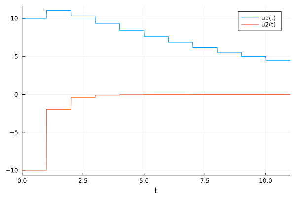

Quickstart
In the following, we will use some of the techniques provided by DataDrivenDiffEq to infer some models.
Linear Systems via Dynamic Mode Decomposition
We will start by estimating the underlying dynamical system of a time discrete process based on some measurements via Dynamic Mode Decomposition. First, we model a simple linear system of the for $u_{i+1} = A u_i$
using DataDrivenDiffEq
using LinearAlgebra
using ModelingToolkit
using OrdinaryDiffEq
A = [0.9 -0.2; 0.0 0.2]
u0 = [10.0; -10.0]
tspan = (0.0, 11.0)
f(u,p,t) = A*u
sys = DiscreteProblem(f, u0, tspan)
sol = solve(sys, FunctionMap())
To estimate the underlying operator in the states $u_1, u_2$, we simply define a discrete DataDrivenProblem using the measurements and time and solve the estimation problem using the DMDSVD algorithm for approximating the operator.
prob = DiscreteDataDrivenProblem(sol)
res = solve(prob, DMDSVD(), digits = 1)
system = result(res)Model ##Koopman#324 with 2 equations States : x[1] x[2] Parameters : p[1] p[2] p[3] Independent variable: t Equations Differential(t)(x[1]) = p[1]*x[1] + p[2]*x[2] Differential(t)(x[2]) = p[3]*x[2]
The DataDrivenSolution contains an explicit result which is a Koopman, defining all necessary information, e.g. the associated operator (which corresponds to our abefore defined matrix $A$).
Matrix(system)2×2 Matrix{Float64}:
0.9 -0.2
-1.07938e-17 0.2In general, we can skip the expensive progress of deriving a callable symbolic system and return just the basic definitions using the operator_only keyword.
res = solve(prob, DMDSVD(), digits = 1, operator_only = true)(K = LinearAlgebra.Eigen{Float64, Float64, Matrix{Float64}, Vector{Float64}}([0.1999999999999999, 0.9000000000000006], [0.05494422557947559 -0.9000000000000002; 0.19230478952816454 1.3877787807814457e-17]), C = [1.0 0.0; 0.0 1.0], B = Matrix{Float64}(undef, 0, 0), Q = [658.3410161960379 -135.16260071909275; -25.406503863502085 20.833333333333325], P = [658.3410161960379 -135.16260071909275; -25.406503863502085 20.833333333333325])Where K is the associated operator given as its eigendecomposition, B is a possible mapping of inputs onto the states, C is the linear mapping from the lifted observeables back onto the original states and Q and P are used for updating the operator.
Nonlinear System with Extended Dynamic Mode Decomposition
Similarly, we can use the Extended Dynamic Mode Decomposition via a nonlinear Basis of observeables. Here, we look a rather famous example with a finite dimensional solution.
using DataDrivenDiffEq
using LinearAlgebra
using ModelingToolkit
using OrdinaryDiffEq
using Plots
function slow_manifold(du, u, p, t)
du[1] = p[1] * u[1]
du[2] = p[2] * (u[2] - u[1]^2)
end
u0 = [3.0; -2.0]
tspan = (0.0, 5.0)
p = [-0.8; -0.7]
problem = ODEProblem(slow_manifold, u0, tspan, p)
solution = solve(problem, Tsit5(), saveat = 0.01)
Since we are dealing with an continuous system in time, we define the associated DataDrivenProblem accordingly using the measured states X, their derivates DX and the time t.
prob = ContinuousDataDrivenProblem(solution)Continuous DataDrivenProblem{Float64}Additionally, we need to define the Basis for our lifting, before we solve the problem in the lifted space.
@variables u[1:2]
Ψ = Basis([u; u[1]^2], u)
res = solve(prob, Ψ, DMDPINV(), digits = 1)
system = result(res)Explicit Result Solution with 2 equations and 3 parameters. Returncode: sucess L2 Norm Error: 3.343797283569837e-15 AICC: 139.4073224511615 Model ##Koopman#1082 with 2 equations States : u[1] u[2] Parameters : p[1] p[2] p[3] Independent variable: t Equations Differential(t)(u[1]) = p[1]*u[1] Differential(t)(u[2]) = p[2]*u[2] + p[3]*(u[1]^2) [-0.8, -0.7, 0.7]
The underlying dynamics have been recovered correctly by the algorithm!
The eigendecomposition of the Koopman operator can be accessed via operator.
operator(system)LinearAlgebra.Eigen{Float64, Float64, Matrix{Float64}, Vector{Float64}}
values:
3-element Vector{Float64}:
-1.5999999999999988
-0.8000000000000005
-0.6999999999999987
vectors:
3×3 Matrix{Float64}:
8.50899e-17 -1.0 1.61045e-15
0.613941 -3.02184e-14 1.0
-0.789352 8.80594e-15 3.59306e-15Nonlinear Systems - Sparse Identification of Nonlinear Dynamics
To find the underlying system without any Algortihms related to Koopman operator theory, we can use Sparse Identification of Nonlinear Dynamics - SINDy for short. As the name suggests, it finds the sparsest basis of functions which build the observed trajectory. Again, we will start with a nonlinear system
using DataDrivenDiffEq
using LinearAlgebra
using ModelingToolkit
using OrdinaryDiffEq
using Plots
using Random
using Symbolics: scalarize
Random.seed!(1111) # Due to the noise
# Create a nonlinear pendulum
function pendulum(u, p, t)
x = u[2]
y = -9.81sin(u[1]) - 0.3u[2]^3 -3.0*cos(u[1]) - 10.0*exp(-((t-5.0)/5.0)^2)
return [x;y]
end
u0 = [0.99π; -1.0]
tspan = (0.0, 15.0)
prob = ODEProblem(pendulum, u0, tspan)
sol = solve(prob, Tsit5(), saveat = 0.01)
# Create the data with additional noise
X = sol[:,:] + 0.1 .* randn(size(sol))
DX = similar(sol[:,:])
for (i, xi) in enumerate(eachcol(sol[:,:]))
DX[:,i] = pendulum(xi, [], sol.t[i])
end
ts = sol.tTo estimate the system, we first create a DataDrivenProblem via feeding in the measurement data. Using a Collocation method, it automatically provides the derivative. Control signals can be passed in as a function (u,p,t)->control or an array of measurements.
prob = ContinuousDataDrivenProblem(X, ts, GaussianKernel() ,
U = (u,p,t)->[exp(-((t-5.0)/5.0)^2)], p = ones(2))
Now we infer the system structure. First we define a Basis which collects all possible candidate terms. Since we want to use SINDy, we call solve with an Optimizer, in this case STLSQ which iterates different sparsity thresholds and returns a pareto optimal solution of the underlying sparse_regression!. Note that we include the control signal in the basis as an additional variable c.
@variables u[1:2] c[1:1]
@parameters w[1:2]
u = scalarize(u)
c = scalarize(c)
w = scalarize(w)
h = Num[sin.(w[1].*u[1]);cos.(w[2].*u[1]); polynomial_basis(u, 5); c]
basis = Basis(h, u, parameters = w, controls = c)
λs = exp10.(-10:0.1:-1)
opt = STLSQ(λs)
res = solve(prob, basis, opt, progress = false, denoise = false, normalize = false, maxiter = 5000)Explicit Result Solution with 2 equations and 7 parameters. Returncode: sucess Sparsity: 5.0 L2 Norm Error: 9.16981610724992 AICC: 1.1925559702692727
A more detailed description of the result can be printed via print(res, Val{true}), which also includes the discovered equations and parameter values.
Where the resulting DataDrivenSolution stores information about the infered model and the parameters:
system = result(res);
params = parameters(res);Model ##Basis#1091 with 2 equations States : u[1] u[2] Parameters : 7 Independent variable: t Equations Differential(t)(u[1]) = p[3]*u[2] Differential(t)(u[2]) = sin(u[1]*w[1])*p[4] + cos(u[1]*w[2])*p[5] + c[1]*p[7] + p[6]*(u[2]^3) [1.0, 1.0, 1.0, -9.75, -3.03, -0.31, -10.01]
Since any system obtained via a solve command is a Basis and hence a subtype of an AbstractSystem defined in ModelingToolkit, we can simply simulate the result via:
infered_prob = ODEProblem(system, u0, tspan, parameters(res))
infered_solution = solve(infered_prob, Tsit5(), saveat = ts)As of now, the control input is dropped in the simulation of a system. We are working on this and pull requests are welcome!

As we can see above, the estimated system matches the ground truth reasonably well.
Implicit Nonlinear Dynamics : Michaelis Menten
But what if you want to estimate an implicitly defined system of the form $f(u_t, u, p, t) = 0$? Do not worry, since there exists a solution : Implicit Sparse Identification. It has been originally described in this paper and currently there exist robust algorithms to identify these systems.
We will focus on the Michaelis Menten Kinetics. As before, we will define the DataDrivenProblem and the Basis containing possible candidate functions for our sparse_regression!.
using DataDrivenDiffEq
using LinearAlgebra
using ModelingToolkit
using Plots
using OrdinaryDiffEq
function michaelis_menten(u, p, t)
[0.6 - 1.5u[1]/(0.3+u[1])]
end
u0 = [0.5]
problem_1 = ODEProblem(michaelis_menten, u0, (0.0, 4.0))
solution_1 = solve(problem_1, Tsit5(), saveat = 0.1)
problem_2 = ODEProblem(michaelis_menten, 2*u0, (4.0, 8.0))
solution_2 = solve(problem_2, Tsit5(), saveat = 0.1)
X = [solution_1[:,:] solution_2[:,:]]
ts = [solution_1.t; solution_2.t]
DX = similar(X)
for (i, xi) in enumerate(eachcol(X))
DX[:, i] = michaelis_menten(xi, [], ts[i])
end
prob = ContinuousDataDrivenProblem(X, ts, DX)
@parameters t
D = Differential(t)
@variables u[1:1](t)
h = [monomial_basis(u[1:1], 4)...]
basis = Basis([h; h .* D(u[1])], [u; D(u[1])], iv = t)Model ##Basis#1127 with 10 equations States : u[1](t) Differential(t)(u[1](t)) Independent variable: t Equations φ₁ = 1 φ₂ = u[1](t) φ₃ = u[1](t)^2 φ₄ = u[1](t)^3 ... φ₁₀ = Differential(t)(u[1](t))*(u[1](t)^4)

Next, we define the ImplicitOptimizer and solve the problem.
opt = ImplicitOptimizer(4e-1)
res = solve(prob, basis, opt, normalize = false, denoise = false, maxiter = 1000);Implicit Result Solution with 1 equations and 4 parameters. Returncode: sucess Sparsity: 4.0 L2 Norm Error: 0.12165324361055349 AICC: 17.215795870781612
As we can see, the DataDrivenSolution already has good metrics. Inspection of the underlying system shows that the original equations have been recovered correctly:
println(system)Model ##Basis#1130 with 1 equations States : u[1](t) Differential(t)(u[1](t)) Parameters : p[1] p[2] p[3] p[4] Independent variable: t Equations 0 = p[1] + u[1](t)*p[2] + Differential(t)(u[1](t))*p[3] + u[1](t)*Differential(t)(u[1](t))*p[4]
Right now, Implicit results cannot be simulated without further processing in ModelingToolkit
Implicit Nonlinear Dynamics : Cartpole
The following is another example on how to use the ImplicitOptimizer and is taken from the original paper.
As always, we start by creating a corresponding dataset.
using DataDrivenDiffEq
using ModelingToolkit
using OrdinaryDiffEq
using LinearAlgebra
using Plots
gr()
function cart_pole(u, p, t)
du = similar(u)
F = -0.2 + 0.5*sin(6*t) # the input
du[1] = u[3]
du[2] = u[4]
du[3] = -(19.62*sin(u[1])+sin(u[1])*cos(u[1])*u[3]^2+F*cos(u[1]))/(2-cos(u[1])^2)
du[4] = -(sin(u[1])*u[3]^2 + 9.81*sin(u[1])*cos(u[1])+F)/(2-cos(u[1])^2)
return du
end
u0 = [0.3; 0; 1.0; 0]
tspan = (0.0, 5.0)
dt = 0.1
cart_pole_prob = ODEProblem(cart_pole, u0, tspan)
solution = solve(cart_pole_prob, Tsit5(), saveat = dt)
X = solution[:,:]
DX = similar(X)
for (i, xi) in enumerate(eachcol(X))
DX[:, i] = cart_pole(xi, [], solution.t[i])
end
t = solution.t
ddprob = ContinuousDataDrivenProblem(
X , t, DX = DX[3:4, :], U = (u,p,t) -> [-0.2 + 0.5*sin(6*t)]
)
Next, we define a sufficient Basis
using Symbolics: scalarize
@variables u[1:4] du[1:2] x[1:1] t
# Right now, we need to scalarize the array expression to combine them
u = scalarize(u)
du = scalarize(du)
x = scalarize(x)
polys = polynomial_basis(u, 2)
push!(polys, sin.(u[1]))
push!(polys, cos.(u[1]))
push!(polys, sin.(u[1])^2)
push!(polys, cos.(u[1])^2)
push!(polys, sin.(u[1]).*u[3:4]...)
push!(polys, sin.(u[1]).*u[3:4].^2...)
push!(polys, sin.(u[1]).*cos.(u[1])...)
push!(polys, sin.(u[1]).*cos.(u[1]).*u[3:4]...)
push!(polys, sin.(u[1]).*cos.(u[1]).*u[3:4].^2...)
implicits = [du; du[1] .* u; du[2] .* u; du .* cos(u[1]); du .* cos(u[1])^2; polys]
push!(implicits, x...)
push!(implicits, x[1]*cos(u[1]))
push!(implicits, x[1]*sin(u[1]))
basis= Basis(implicits, [u; du], controls = x, iv = t);Model ##Basis#1134 with 45 equations States : 6 Independent variable: t Equations φ₁ = du[1] φ₂ = du[2] φ₃ = du[1]*u[1] φ₄ = du[1]*u[2] ... φ₄₅ = sin(u[1])*x[1]
And solve the problem by varying over a sufficient set of thresholds for the associated optimizer. Additionally we activate the scale_coefficients option for the `ImplicitOptimizer, which helps to find sparse equations by normalizing the resulting coefficient matrix after each suboptimization.
To evaluate the pareto optimal solution over, we use the functions f and g which can be passed as keyworded arguements into the solve function. f is a function with different signatures for different optimizers, but returns the $L_0$ norm of the coefficients and the $L_2$ error of the current model. g takes this vector and projects it down onto a scalar, using the $L_2$ norm per default. However, here we want to use the AIC of the output of f. A noteworthy exception is of course, that we want only results with two or more active coefficents. Hence we modify g accordingly.
λ = [1e-4;5e-4;1e-3;2e-3;3e-3;4e-3;5e-3;6e-3;7e-3;8e-3;9e-3;1e-2;2e-2;3e-2;4e-2;5e-2;
6e-2;7e-2;8e-2;9e-2;1e-1;2e-1;3e-1;4e-1;5e-1;6e-1;7e-1;8e-1;9e-1;1;1.5;2;2.5;3;3.5;4;4.5;5;
6;7;8;9;10;20;30;40;50;100;200];
opt = ImplicitOptimizer(λ)
# Compute the AIC
g(x) = x[1] <= 1 ? Inf : 2*x[1]-2*log(x[2])
res = solve(ddprob, basis, opt, du, maxiter = 1000, g = g, scale_coefficients = true)
println(res)
println(result(res))
println(parameter_map(res))Implicit Result
Solution with 2 equations and 10 parameters.
Returncode: sucess
Sparsity: 10.0
L2 Norm Error: 2.5108086500667705e-15
AICC: 161.24191685847754
Model ##Basis#1137 with 2 equations
States : 6
Parameters : 10
Independent variable: t
Equations
0 = sin(u[1])*p[3] + du[1]*p[1] + cos(u[1])*p[5]*x[1] + du[1]*p[2]*(cos(u[1])^2) + cos(u[1])*sin(u[1])*p[4]*(u[3]^2)
0 = du[2]*p[6] + p[10]*x[1] + cos(u[1])*sin(u[1])*p[9] + sin(u[1])*p[8]*(u[3]^2) + du[2]*p[7]*(cos(u[1])^2)
Pair{SymbolicUtils.Term{Real, Base.ImmutableDict{DataType, Any}}, Float64}[p[1] => -1.0, p[2] => 0.5, p[3] => -9.81, p[4] => -0.5, p[5] => -0.5, p[6] => -1.0, p[7] => 0.5, p[8] => -0.5, p[9] => -4.905, p[10] => -0.5]